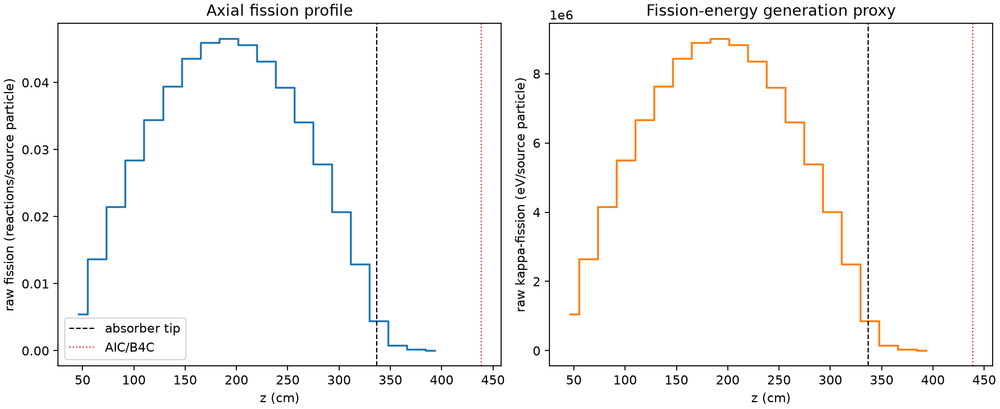
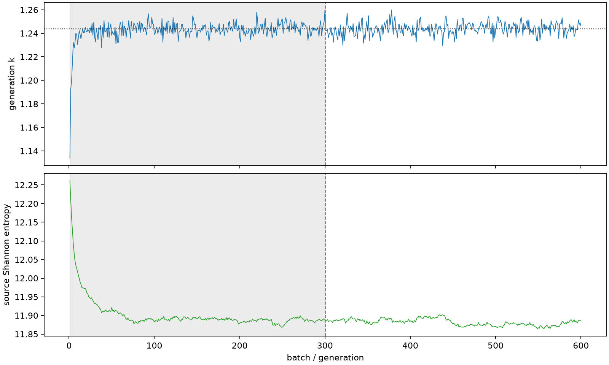

| field | value |
|---|---|
| experiment | V2-STAGE_128_OGRENCI_04-0014 |
| k | 1.2437183454729195 |
| MC standard error | 0.00019818595438082207 |
| seconds | 1002.5558446860014 |
| acceptance | not_assessed |
| convergence | review_required |
Completed is output integrity only; physical and statistical review required. Zero tallies do not prove zero production or zero uncertainty.
| diagnostic | value |
|---|---|
| geometric fuel voxels | 5280 |
| zero fission tally voxels | 0 |
| low signal fuel voxels | 249 |
| low signal fission share | 6.368081144326119e-05 |
| low signal kappa share | 6.371448208287661e-05 |
| important fission share | 0.9500926770345516 |
| previous filter included | 5031 |
| duration estimate s | 1562.5173488400023 |
| actual minus estimate s | -559.961504154001 |
| fission relative MC error | statistics |
|---|---|
| all_geometric_fuel | {"voxels": 5280, "positive_mean_voxels": 5280, "zero_mean_voxels": 0, "undefined_relative_error_voxels": 0, "median": 0.009723141086152659, "p95": 0.15137539426115587, "maximum": 0.44311032774496917} |
| low_signal | {"voxels": 249, "positive_mean_voxels": 249, "zero_mean_voxels": 0, "undefined_relative_error_voxels": 0, "median": 0.24704064159211347, "p95": 0.3246719675957061, "maximum": 0.44311032774496917} |
| important_95pct | {"voxels": 3664, "positive_mean_voxels": 3664, "zero_mean_voxels": 0, "undefined_relative_error_voxels": 0, "median": 0.00850484854447298, "p95": 0.013235805927956645, "maximum": 0.016221710251190683} |
| outside_previous_filter | {"voxels": 249, "positive_mean_voxels": 249, "zero_mean_voxels": 0, "undefined_relative_error_voxels": 0, "median": 0.24704064159211347, "p95": 0.3246719675957061, "maximum": 0.44311032774496917} |
| kappa_fission relative MC error | statistics |
|---|---|
| all_geometric_fuel | {"voxels": 5280, "positive_mean_voxels": 5280, "zero_mean_voxels": 0, "undefined_relative_error_voxels": 0, "median": 0.0097128561982379, "p95": 0.15109673057968537, "maximum": 0.44252373622512875} |
| low_signal | {"voxels": 249, "positive_mean_voxels": 249, "zero_mean_voxels": 0, "undefined_relative_error_voxels": 0, "median": 0.24642445741135677, "p95": 0.32415265068092536, "maximum": 0.44252373622512875} |
| important_95pct | {"voxels": 3664, "positive_mean_voxels": 3664, "zero_mean_voxels": 0, "undefined_relative_error_voxels": 0, "median": 0.008496030908681791, "p95": 0.013222508020968079, "maximum": 0.016203964259859552} |
| outside_previous_filter | {"voxels": 249, "positive_mean_voxels": 249, "zero_mean_voxels": 0, "undefined_relative_error_voxels": 0, "median": 0.24642445741135677, "p95": 0.32415265068092536, "maximum": 0.44252373622512875} |
| axial bin | fission share | kappa-fission share |
|---|---|---|
| 1 | 0.010671061102002952 | 0.010671567674090082 |
| 2 | 0.026914917130406713 | 0.026914867733929357 |
| 3 | 0.042301963224489605 | 0.04230176593158679 |
| 4 | 0.055916815128761815 | 0.05591669179499897 |
| 5 | 0.067715979146264 | 0.0677157699292813 |
| 6 | 0.0776576075305235 | 0.07765760578821651 |
| 7 | 0.08586181036386285 | 0.08586153255710995 |
| 8 | 0.0905080413032037 | 0.09050768214296351 |
| 9 | 0.09155914073368028 | 0.09155909418997792 |
| 10 | 0.0897677396369844 | 0.08976735408479525 |
| 11 | 0.08493806162729263 | 0.0849379237208103 |
| 12 | 0.07732106274077588 | 0.07732078318735089 |
| 13 | 0.06705575481012264 | 0.06705539577026748 |
| 14 | 0.05477192985993798 | 0.054771826960838106 |
| 15 | 0.04082249353707041 | 0.04082245200644923 |
| 16 | 0.02537455430394763 | 0.025374642899880295 |
| 17 | 0.008781407670731461 | 0.008782552290875613 |
| 18 | 0.001632484372339447 | 0.001633112632651781 |
| 19 | 0.00035978365794870823 | 0.0003599500763691267 |
| 20 | 6.739211965325587e-05 | 6.742862755749774e-05 |
Histories include the inactive-to-active transition at batch 300. kappa-fission approximates fission energy production, not total heat deposition.

